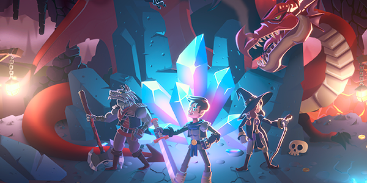
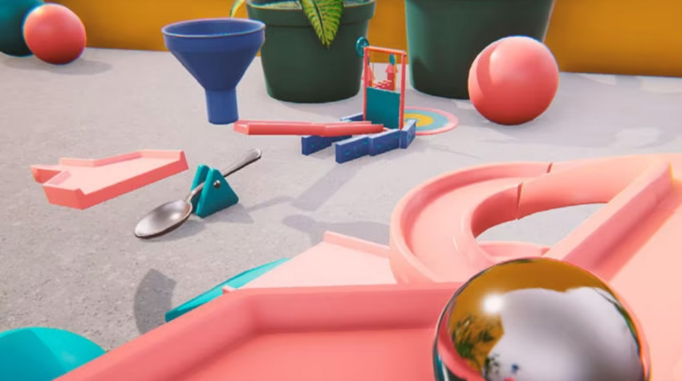
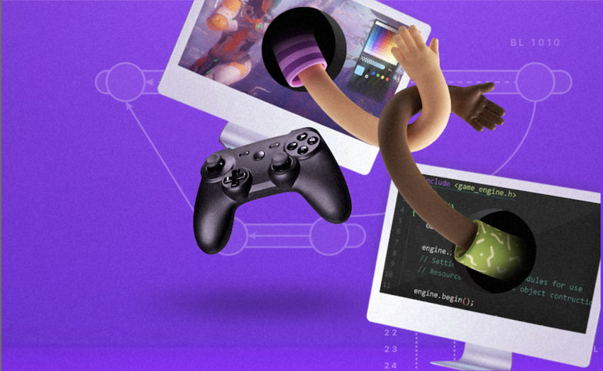
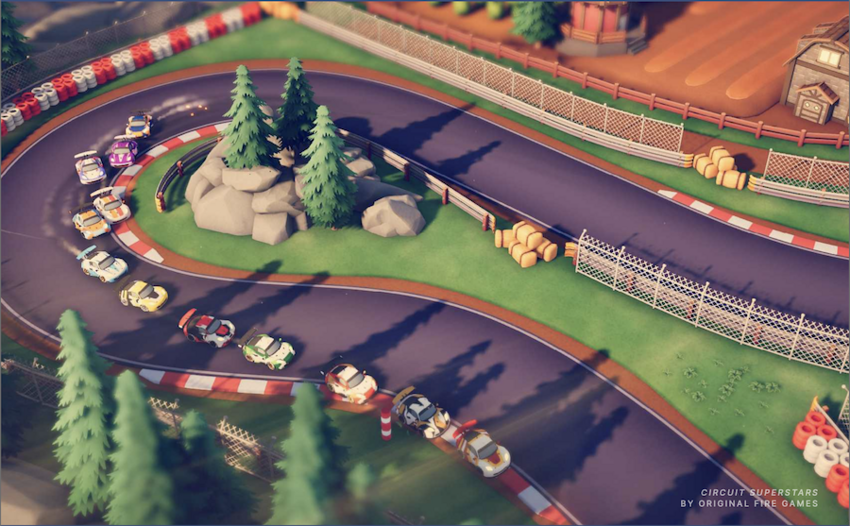
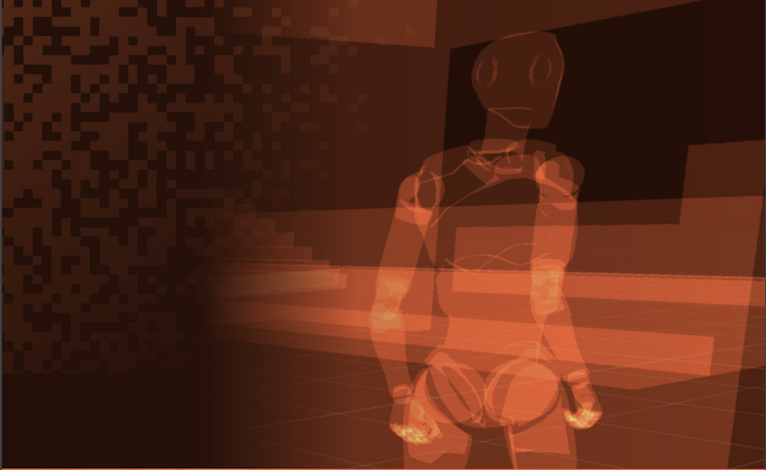

Advanced best practice guides
Use this page to discover and learn production-tested best practices from Unity experts. The Technical Content Marketing team at Unity created the guides listed on this page together with industry experts, and engineers and technical artists from Unity R&D and the Accelerate Games Solutions teams.
Art and Design

2D game art, animation, and lighting for artists
Authored by the art director of the Unity 2D demo Dragon Crashers and with contributions from Unity 2D experts, this guide shows how to set up your 2D project, switch between Unity and Autodesk, work with sprites, sort layers, and more.

The Unity Game Designer Playbook
This guide is designed to help experienced game designers learn how to prototype their ideas in Unity for more efficient creation and team collaboration. Learn about visual scripting, creating input, level design tools, microinteractions, and more.
Unity for Technical Artists: key toolsets and workflows (Unity 2021 LTS edition)
Some of Unity’s most experienced technical artists made key contributions to this guide. It covers working with assets, rendering pipelines, lighting, worldbuilding, digital humans, and more.
Unity for Technical Artists: key toolsets and workflows (Unity 2020 LTS edition)
Some of Unity’s most experienced technical artists made key contributions to this guide. It covers, working with assets, rendering pipelines, lighting, worldbuilding, digital humans, and more.

User interface design and implementation in Unity
This e-book provides step-by-step guidance on how to build interfaces using Unity’s UI systems, including UI design and development concepts, asset preparation workflows, styling, and fonts.
DevOps

Version control project organization best practices
Learn the fundamentals of version control and project organization in Unity. Key topics covered include setting up a Unity project with different version control solutions, organizing a Unity project, proper folder structure, and naming standards.
Graphics & Rendering

Universal Render Pipeline for advanced Unity creators
Use this guide to learn how to set up a new project with URP or convert an existing Built-in Render Pipeline-based project to URP. Learn about URP quality settings and shaders, setting up lighting, shadows, special effects, and more.
High Definition Render Pipeline (Unity 2021 LTS edition)
This guide provides in-depth reference for creating high-end lighting for PC and console games and covers topics such as HDRP settings, cameras, and Volume frameworks, creating skyscapes, reflections, real-time lighting, and more.
High Definition Render Pipeline (Unity 2020 LTS edition)
This guide provides in-depth reference for creating high-end lighting for PC and console games and covers topics such as HDRP settings, cameras, and Volume frameworks, creating skyscapes, reflections, real-time lighting, and more.
The definitive guide to creating advanced visual effects in Unity
This guide provides a complete overview of how to use visual effects authoring tools in Unity to create any kind of effect: water and liquid, smoke, fire, explosions, weather, impact, magic, and electricity.
Performance optimization

Ultimate guide to profiling Unity games
This guide provides advanced knowledge and advice on how to profile an application in Unity, manage its memory, and optimize its power consumption from start to finish. Learn best practices for a profiling workflow and using Unity’s profiling tools.
Optimize your console and PC game performance
Get over 80 tips from Unity’s support engineers on how to optimize PC and console games for smooth performance and gameplay. It covers topics like programming and code architecture, GPU optimization, memory, assets, and more.
Mobile game performance
This guide provides over 75 tips on how you can optimize your mobile game to run smoothly on as many devices as possible. Learn about programming and code architecture, GPU optimization, memory, assets, and more.
Unity Game Dev Field
Use this guide to get familiar with the latest Unity features and workflows and covers Editor navigation, setting up your development environment, as well as Unity’s profiling tools, physics, and Input Systems.
Scripting
Create modular game architecture in Unity with ScriptableObjects
This guide provides tips from professional developers on leveraging ScriptableObjects in your Unity projects. Download the accompanying demo project from GitHub, inspired by classic arcade game mechanics, to follow along.
C# style guide: Write cleaner code that scales
Learn industry best practices on how to organize your Unity C# code and what to consider for your own code style guide, including naming conventions, formatting, classes, methods, and comments.
Level up your code with game programming patterns
This guide covers SOLID principles and provides examples of how to implement well-known design patterns for game development, including Factory, Singleton, Command, State, and Observer Pattern, Object Pooling, and Model View Presenter (MVP).